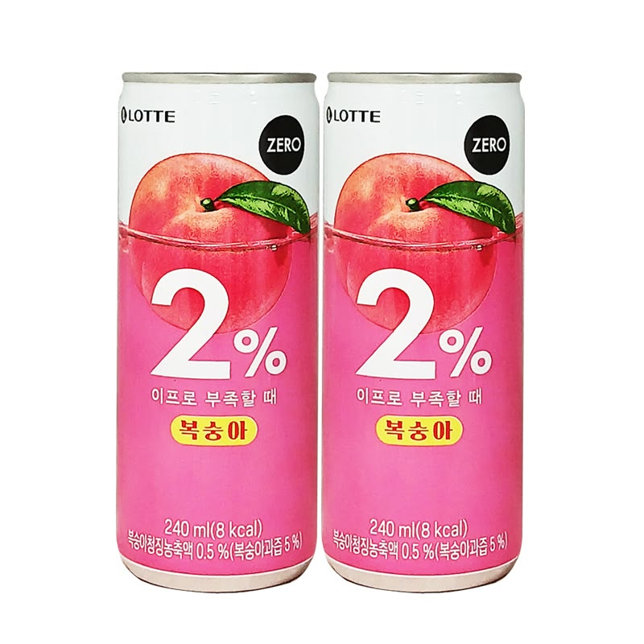
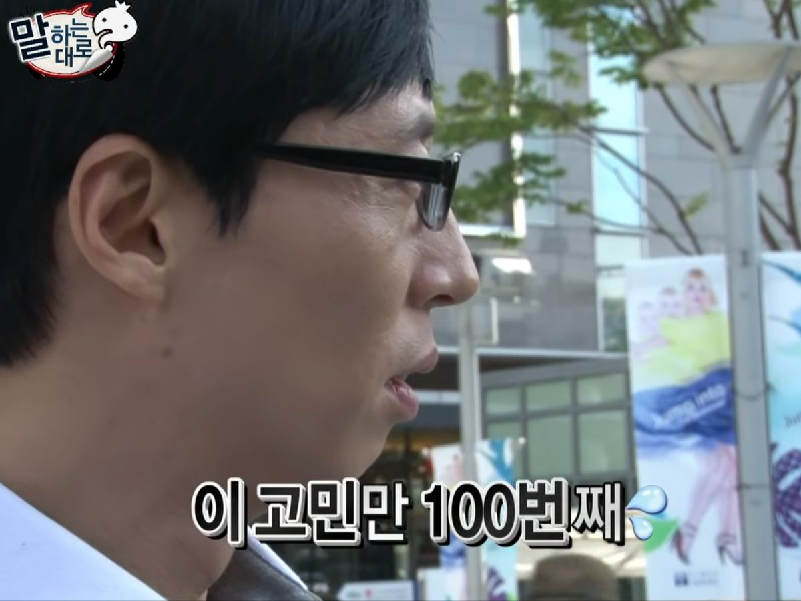
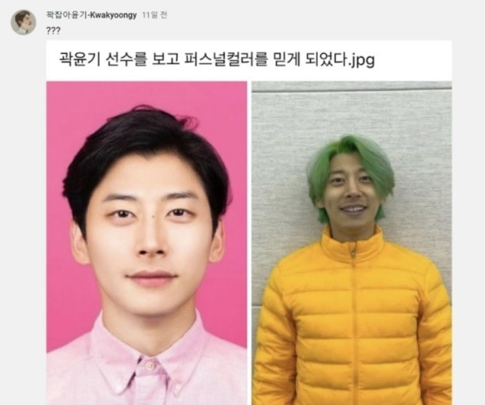
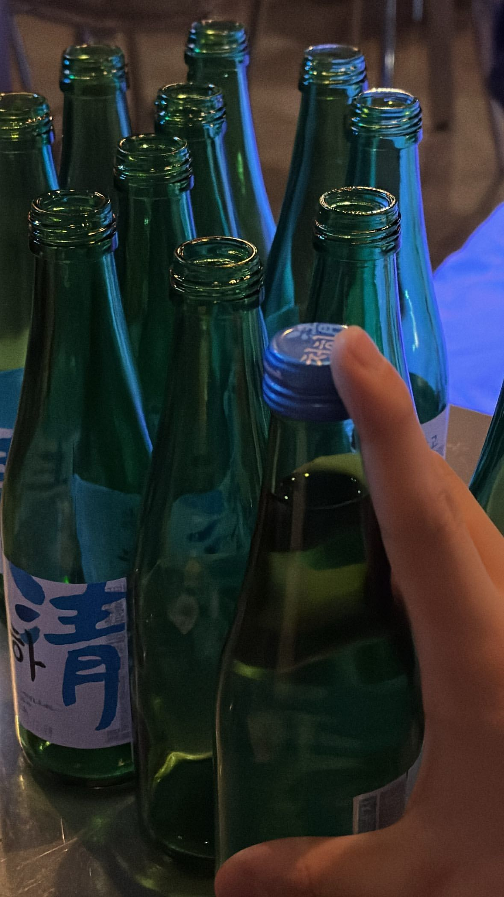
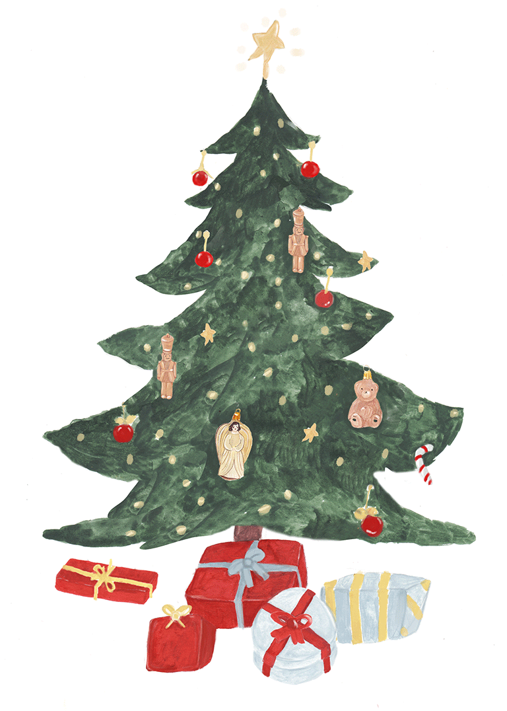

나의 첫 연애썰
나는 20살까지 모쏠이었다. 이유를 꼽아보자면 일단 내 이상형이 남들에 비해 좀 특이한 편이기도 했고, 여고를 나와서 주변에 남자인 친구가 아예 없었기 때문이다.(약간의 남자 공포증이 있었다)
그렇게 대학교에 입학하고, 사진동아리에 들어갔다. 대학 생활의 낭만을 꿈꾸며 신청한 첫 정기 출사. 약속 장소는 덕수궁이었다.
총 5명이 모이기로 했는데, 한 명이 늦었다. 다들 어색하게 서서 기다리던 그때, 저 멀리서 한 남자가 뛰어왔다.
그는 너무 미안하다며 편의점으로 달려가 음료수를 사 왔다. 나에게 "무슨 음료를 먹고 싶으세요?"라고 물었고, 나는 "이프로요"라고 답했다.

그는 모두에게 음료수를 사주었고, 그 배려심에 속으로 이미 +10점을 주었다.출사를 하며 사진을 찍다 보니 내 핸드폰 배터리가 바닥을 보였다. 그때 그가 "제 보조 배터리 쓰실래요?"라며 친절을 베풀었다. 감사했지만... 아쉽게도 배터리는 작동하지 않았다.
밥을 먹으며 대화를 나누는데, 그가 내 '이상형 리스트'에 완벽히 들어맞는다는 것을 알게 되었다.
1. 말을 예쁘게 하는 사람
2. 내가 모르는 분야의 지식이 많고 똑똑함
3. 적당한 아랍상
4. 웃을 때 치아가 고른가
5. 글씨 잘 쓰는 사람
그렇게 출사가 끝나고 연락을 하려고 고민을 엄청했다. 하지만 결국 마음을 전하지 못했고, 인연이 끝나는 듯했다..

8개월 뒤,11월에 학생회였던 나는 학생회 회식을 하게되었다. 그러다 이제 활동안하는 선배님를 알게되었는데, 사진동아리를 한다고 하였다.그렇게 언니에게 그사람을 아냐고 물었고, 선배의 절친의 절친이라고 했다. 선배는 바로 나의 감정을 캐치하고, "소개시켜줄까?"라고 했다. 당황한 나는 얼버무렸고, 8개월이나 꽤 지났기때문에 그사람은 잊은것 같기도하고, 내가 소개시켜달라고하면 내가 먼저 좋아하는티가 나는데, 그러기 싫어서 고민이 되었다. 결국엔 언니가 그 사람에게 내가 먼저 말한것을 전하지 않은채 따로 주선하여 소개팅을 하게 되었다.
알고 보니 나한테는 아무말도 안한다고하고, 그 언니가 남자친구에게 "얘(나)가 널 8개월 동안 구구절절 짝사랑했다"고 거짓말을 했다. 그래서 그는 어떤사람이 나를 이렇게 좋아할까? 라고 생각하여 한번도 소개팅을 나오지 않고, 연애 생각이 없었는데, 소개팅을 수락했다고 한다.
연락을 주고 받고 소개팅 당일이 왔다. 그가 식당을 예약하고 밥을 사고 여러 이야기를 나누었다. 하지만 좋은 사람인데 대화가 통하지 않는다고 판단해서 그의 애프터를 거절했다. 그렇게 아는 선배가 늘어나나 싶어 카톡 연락만 했다.
그런데 카톡을 주고받으며 말이 너무 잘 통했고 잠깐 얼굴을 봤는데 그가 잘생겨 보이기 시작했다. 사실 그는 엄청난 쿨톤인데 소개팅때는 누런 아이보리를 입고 나와 못생겨 보였다. 산책할 때 검정 옷을 입은 모습에 설레었다.

그렇게 기말고사가 끝나고 크리스마스 이브에 만났다. 영화를 보고 술을 먹었는데 막차가 끊겼다..

그렇게 첫차를 타고 가자는 심정으로 계속 술을 마시며 이야기를 했다.. 그가 어릴 적 이야기를 해주었고 나는 흥미로워서 리액션을 해주는데, 갑자기 극 T인 그가 눈물을 흘렸다.(술기운인가..)"태어나서 내 이야기를 이렇게 해본 게 처음이야. 나의 기억들을 꺼내줘서 고마워.."
나는 당연히 너무 당황하여 휴지를 주었다. 눈물을 그친 그는 "우리 만나볼래?"라고 고백했다. 시계를 보니 이미 12월 25일. 모쏠이었던 나에게 찾아온 가장 완벽한 크리스마스 선물이었다.
